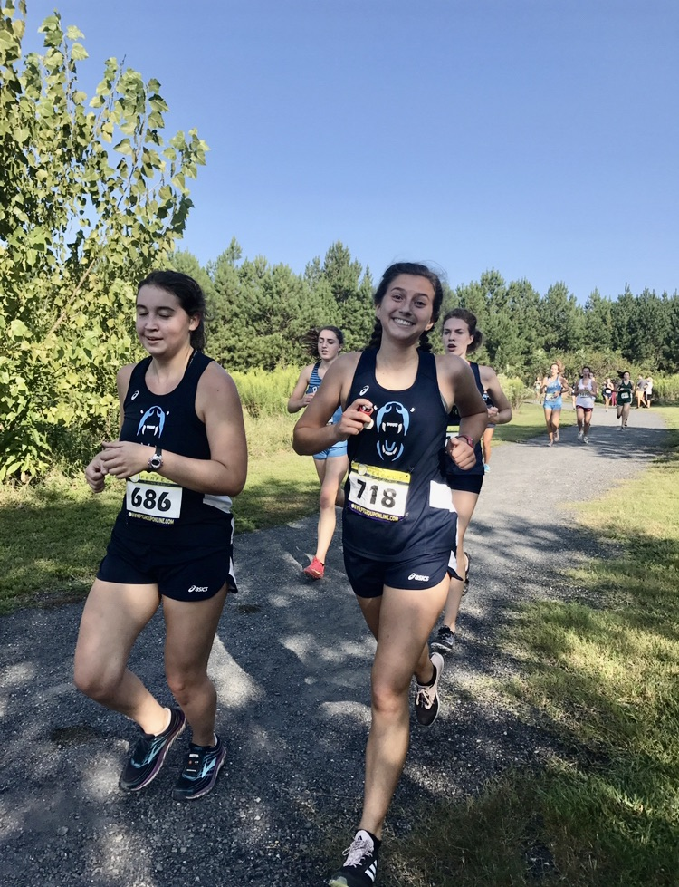
If you look closely you can see I'm holding my inhaler, which I did frequently use.
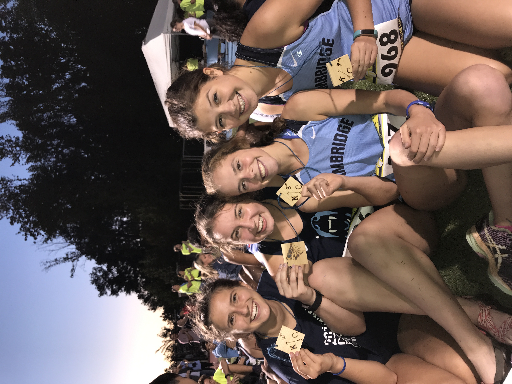
This race was my first time getting a medal! However, I ate Chick-Fil-A right before, so I threw up at the finish line.
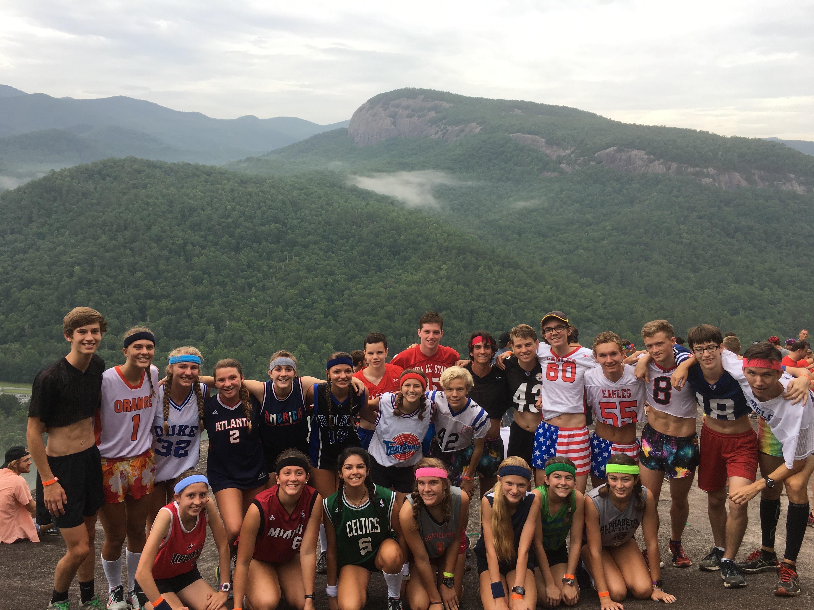
Every year we went to running camp in North Carolina, and this year we dressed up in jerseys!
Underclassman Era
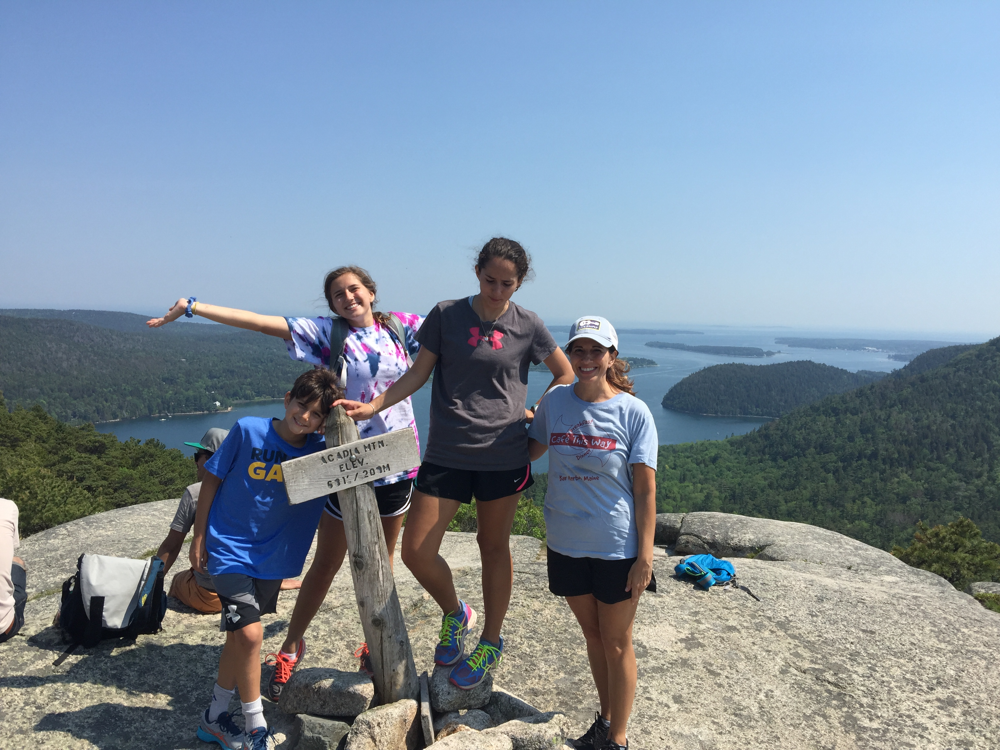
My family loves to go to Acadia National Park in Maine, it's a goregous combo of mountains and ocean.
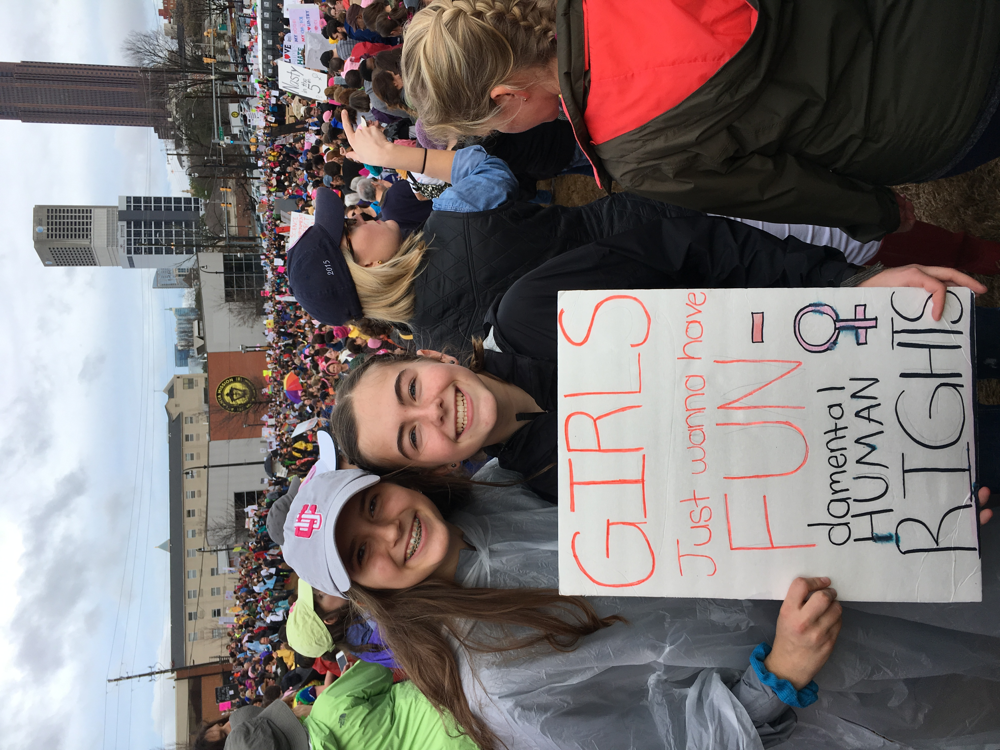
I went to the Women's March in Atlanta, Georgia in 2017! This is the start of my Politics Queen Era.
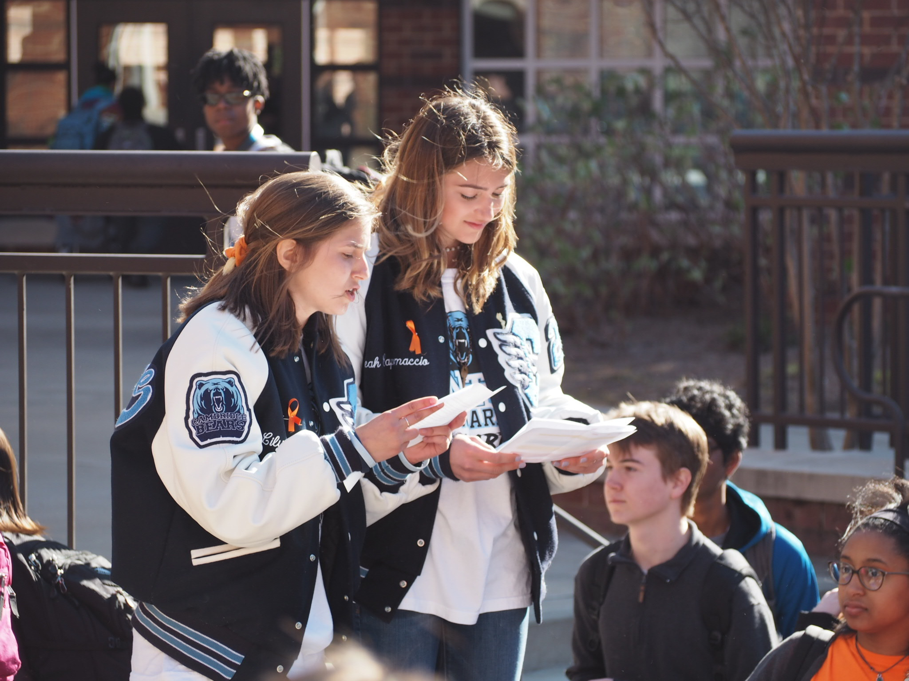
Me and my best friend Leah gave a speech about guns at the 2018 National Walkout day. We were pulled off stage by a teacher.
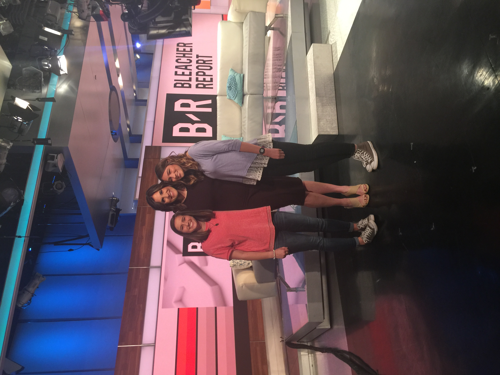
My sister put a video of the walkout on Twitter and we ended up getting interviewed on CNN!
Upperclassman Era
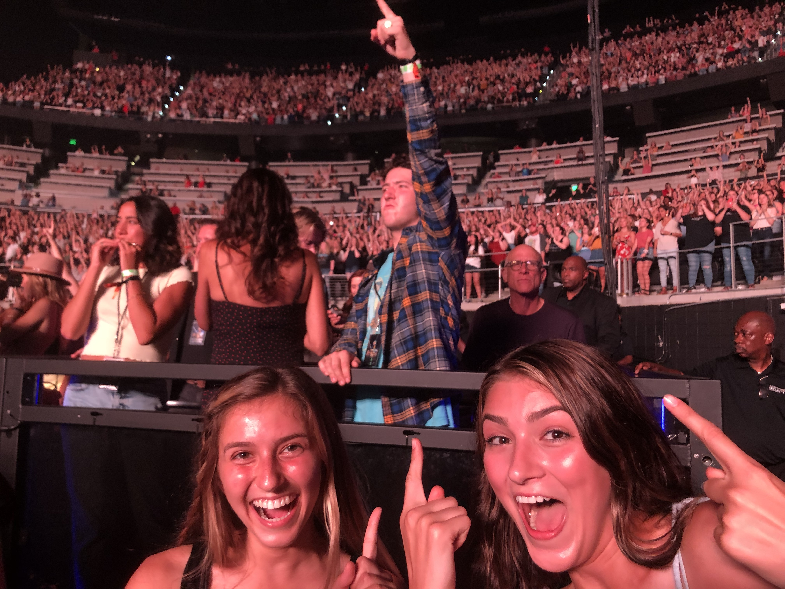
Leah and I got nosebleed seats to the Jonas Brothers Concert, and then were offered floor seats right in front of Frankie Jonas!
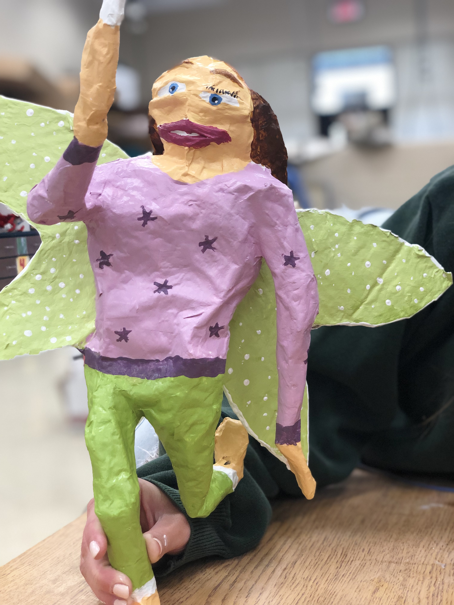
I was forced to take Intro to Art, and this sculpture is the only assignment I got a 100% on, we put it on top of our Christmas tree now.
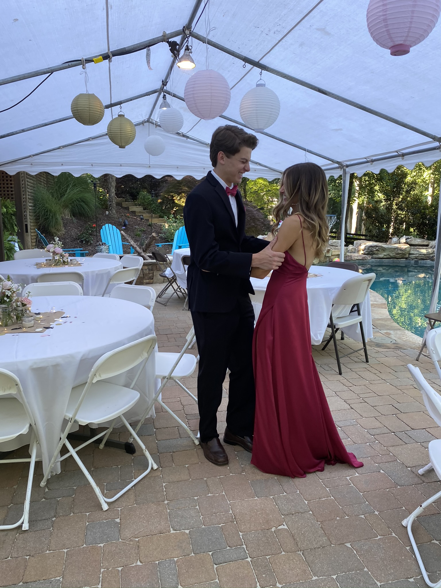
Me with my High School boyfriend, Will, at our outdoor covid fake prom. (this dress is so yas I loved it) (also yes both my ex bfs are named will)
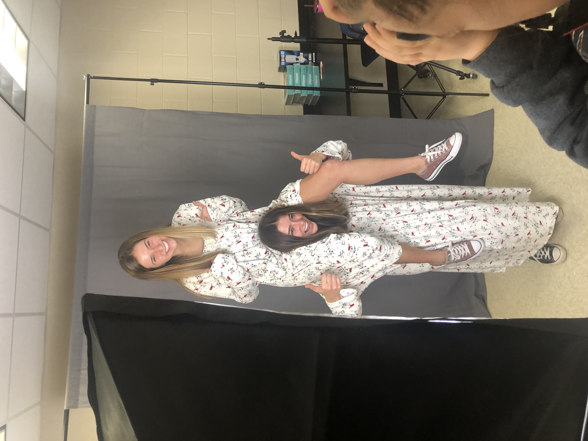
Leah and I won the Two Peas in a Pod senior superlative, so we got these nightgowns from Walmart to wear for our picture.
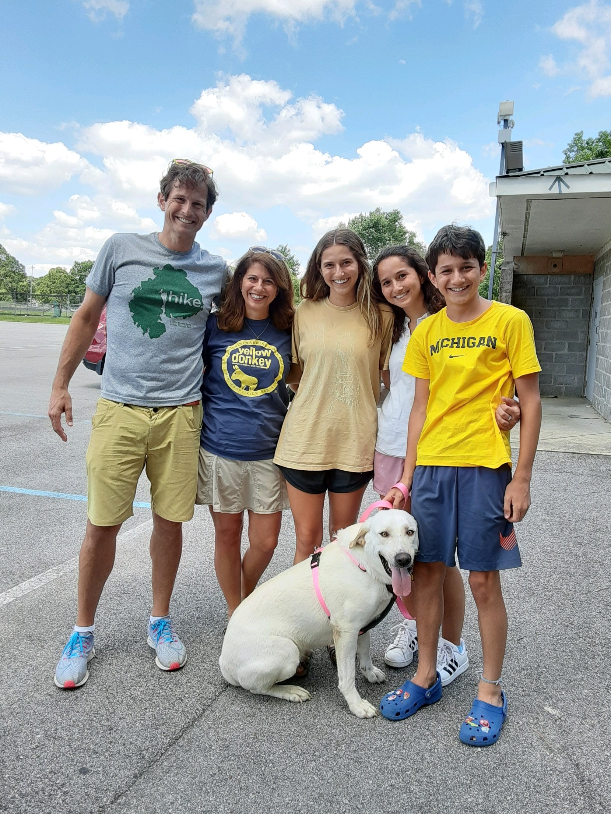
My childhood dog, Lucy died in February, 2020, so we rescused this pup Rosie and she is the best dog ever. This is the day we picked her up.
This is me and some of my friends at a trackmeet, it was the last thing I really did before COVID hit :(